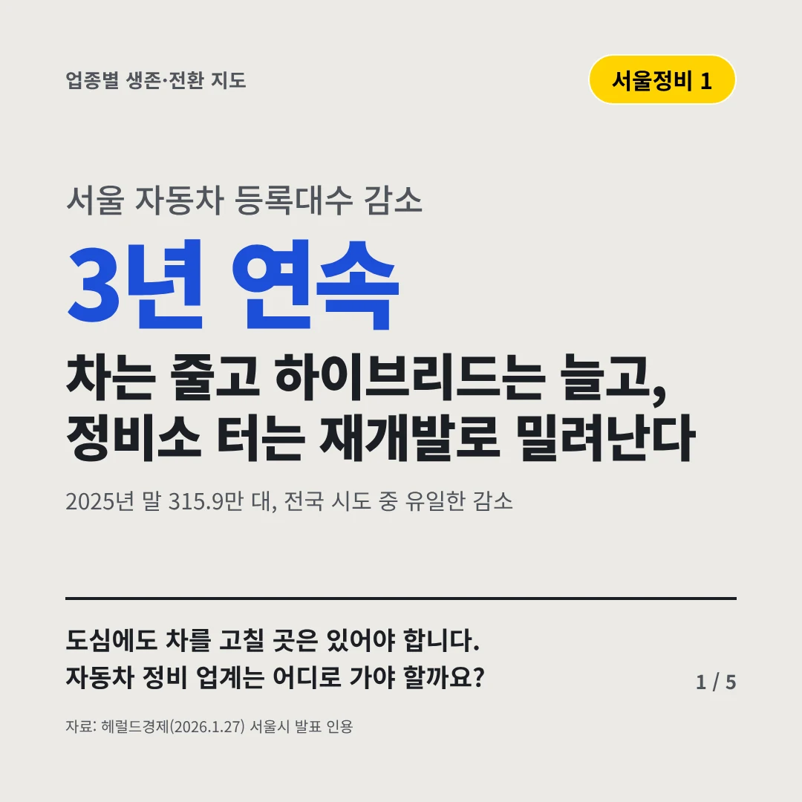
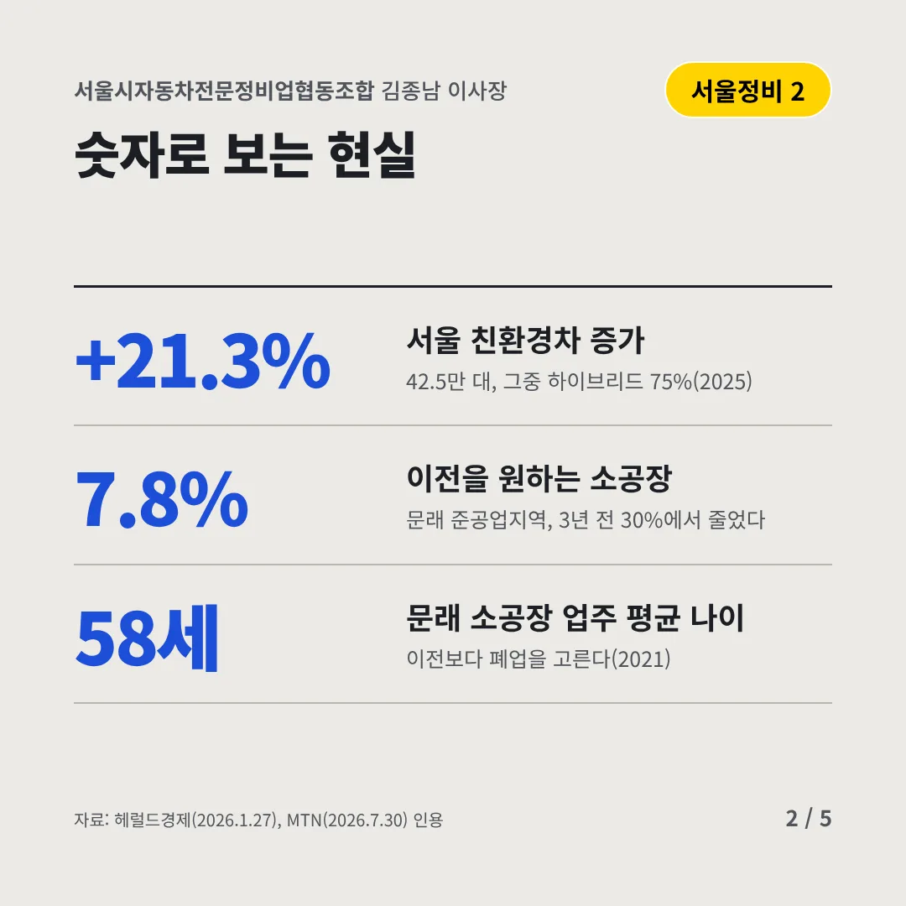
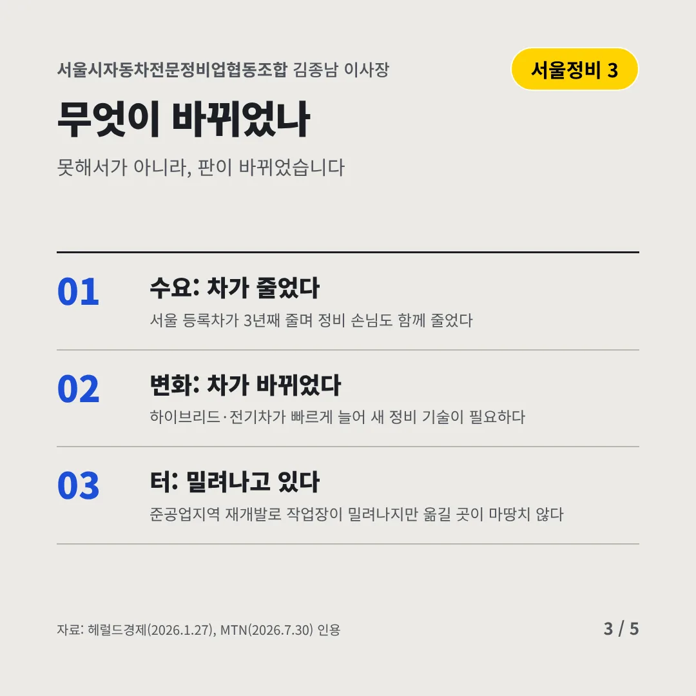
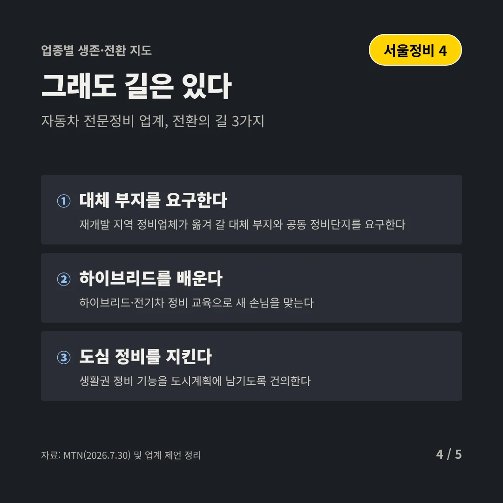
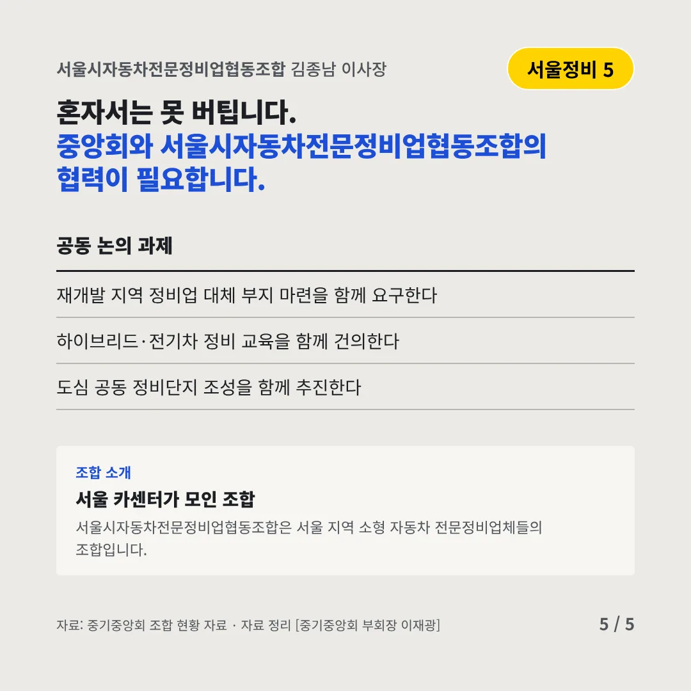
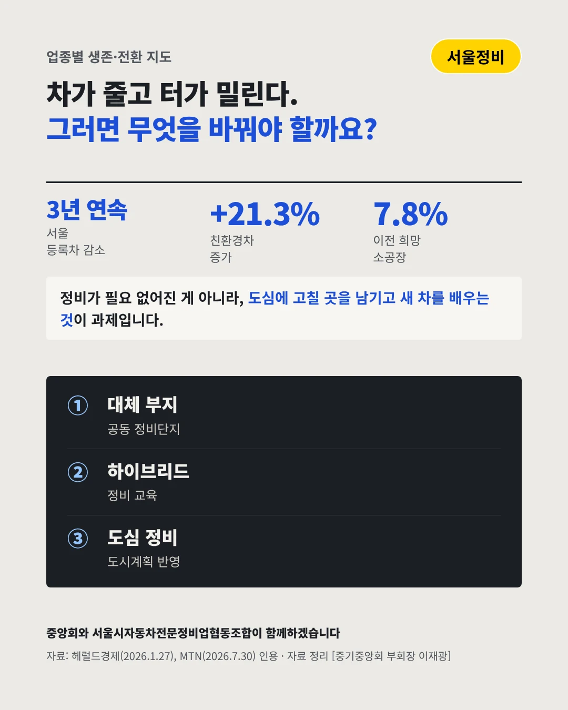

서울시자동차전문정비업협동조합
차는 줄고 하이브리드는 늘고, 정비소 터는 재개발로 밀려난다
3년 연속 서울 자동차 등록대수 감소






도심에도 차를 고칠 곳은 있어야 합니다. 자동차 정비 업계는 어디로 가야 할까요?
숫자로 보는 현실
- +21.3%서울 친환경차 증가42.5만 대, 그중 하이브리드 75%(2025)
- 7.8%이전을 원하는 소공장문래 준공업지역, 3년 전 30%에서 줄었다
- 58세문래 소공장 업주 평균 나이이전보다 폐업을 고른다(2021)
무엇이 바뀌었나
- 수요: 차가 줄었다서울 등록차가 3년째 줄며 정비 손님도 함께 줄었다
- 변화: 차가 바뀌었다하이브리드·전기차가 빠르게 늘어 새 정비 기술이 필요하다
- 터: 밀려나고 있다준공업지역 재개발로 작업장이 밀려나지만 옮길 곳이 마땅치 않다
그래도 길은 있다
- 대체 부지를 요구한다재개발 지역 정비업체가 옮겨 갈 대체 부지와 공동 정비단지를 요구한다
- 하이브리드를 배운다하이브리드·전기차 정비 교육으로 새 손님을 맞는다
- 도심 정비를 지킨다생활권 정비 기능을 도시계획에 남기도록 건의한다
한 장 요약

조합 소개
서울시자동차전문정비업협동조합은 서울 지역 소형 자동차 전문정비업체들의 조합입니다.
자료: 헤럴드경제(2026.1.27), MTN(2026.7.30)